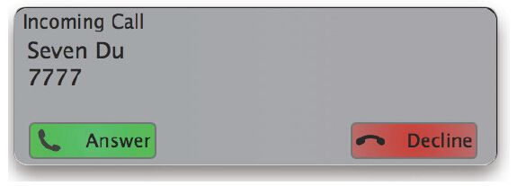

10.4 originate命令实例解析
originate命令是我们在调试过程中经常使用的一个命令，通过它几乎可以了解到系统中所有的知识，因此我们也在不厌其烦地对其进行讲解。虽然部分内容与前面的章节有所重复，但为了本节的完整性，笔者还是决定多啰嗦几句。另外，这里我们也将进行很多扩展和延伸。
在FreeSWITCH控制台上输入originate命令后就可以得到一个帮助（后面的小节均根据如下代码讲解）：
freeswitch> originate
-USAGE: <call url><exten>|&<application_name>(<app_args>)
[<dialplan>] [<context>] [<cid_name>] [<cid_num>] [<timeout_sec>]
跟其他约定一样，尖括号一般是必选参数，而方括号里面是可选参数。
10.4.1 使用格式和参数
上述代码中，第1个参数call url就是我们通常所说的呼叫字符串（Dial String）。originate命令用于从FreeSWITCH中向外发起一个呼叫，这个“外”就是用这里的呼叫字符串指定的。
关于呼叫字符串的概念我们已经在4.5.2节讲过了，这里我们再复习一下。看以下命令：
freeswitch> originate user/1000 &echo
上述命令中的user/1000就是呼叫字符串。它表示从本地的注册用户中查找该用户的联系地址。呼叫字符串的格式是“类型/参数/参数”，其中第一部分是字符串的类型。下面我们先来做个实验，看输入一个错误的字符串会出现什么：
freeswitch> originate test/1000 &echo
-ERR CHAN_NOT_IMPLEMENTED
[ERR] switch_core_session.c:496 Could not locate channel type test
[NOTICE] switch_ivr_originate.c:2661 Cannot create outgoing channel of type [test] cause: [CHAN_NOT_IMPLEMENTED]
其中，CHAN_NOT_IMPLEMENTED表示这种Channel的类型没有实现，因而这不是一个合法的字符串，无法创建这种类型的Channel并进行呼叫。
那么，系统到底提供了多少Channel类型呢？一般来说，每种Endpoint都会提供相应的呼叫字符串，每一种呼叫字符串的类型都属于一个Endpoint Interface，其中一些类型又类似于一种“高级”的呼叫字符串，如user和group。这些呼叫字符串看起来像一个虚拟的Endpoint Interface，它们最终会解析到底层的sofia Endpoint Interface。
另外，我们在前面的章节中也讲过，可以通过逗号（，）或竖线符号（|）将多个呼叫字符串隔开，以达到同振或顺振的目的。如下面命令可同时呼叫1000和1001，两个话机都会振铃，哪个先接听则接通哪个，另一路会自动挂断，这种呼叫方式称为“同振”：
freeswitch> originate user/1000,user/1001 &echo
下列命令就是“顺振”，即第一个号码呼叫失败则呼叫第二个：
freeswitch> originate user/1000|user/1001 &echo
10.4.2 转入Dialplan
originate的第2个参数是一个exten（可以认为是一个分机号），或者是一个“&”符号加上App。对于后者，我们已经很熟悉了，整个命令的作用是向外发起一个呼叫，建立一个Channel，对方接听后在本端执行一个App，如上面的echo。
对于前者，与上述的情况类似，在向外发起一个呼叫并等待对方接听后，FreeSWITCH就与对方建立了一个Channel，Channel的远端当然是接听电话的用户。在本端与上述App的情形不同的是，它会将Channel转入Dialplan去路由，路由要查找的目的地就是exten。也就是说，在用户接听后，这种情况跟用户呼入的处理是一样的，都是进入Dialplan进行路由，如在默认的配置中，下面的两条命令基本上是等价的：
freeswitch> originate user/1000 9196
freeswitch> originate user/1000 &echo
前者在1000接听后进入Dialplan，找到9196这个exten，然后再执行echo。
接下来再看第3个参数，它是Dialplan的类型，如果不设置，默认就是XML。我们在第8章曾讲到过inline Dialplan，因此也可以在这里试一下，它与上面的例子也是等价的：
freeswitch> originate user/1000 echo inline
第4个参数是Dialplan的Context，对于inline Dialplan，它会忽略Context，而对于XML则是有效的，如：
freeswitch> originate user/1000 1001 XML public
上述命令在1000接听后会进入public Dialplan查找路由。
10.4.3 更改主叫号码
接下来的两个参数分别是主叫名称（cid_name，Caller ID Name）和主叫号码（cid_number，Caller ID Number）。比如初学者经常看到0000000000这样的主叫号码，那是FreeSWITCH发起呼叫时默认使用的主叫号码。我们也可以在发起呼叫时自行指定主叫号码，而不使用默认值，如：
freeswitch> originate user/1000 &echo XML default 'Seven Du' 7777
注意，如果参数中有空格，需要用单引号引起来。上述命令产生的INVITE消息如下，其中主叫号码信息在From和Remote-Party-ID字段中（这里省略了其他字段）。
INVITE sip:1000@192.168.1.127:47294;rinstance=a39d7b2af86ea27d SIP/2.0
Via: SIP/2.0/UDP 192.168.1.127;rport;branch=z9hG4bKc0yQ4NU04paXr
Max-Forwards: 70
From: "Seven Du" <sip:7777@192.168.1.127>;tag=y5j452DSQNUBS
To: <sip:1000@192.168.1.127:47294;rinstance=a39d7b2af86ea27d>
Remote-Party-ID: "Seven Du" <sip:7777@192.168.1.127>;party=calling;screen=yes;privacy=off
图10-8所示是软电话客户端显示出来的来电信息。

图10-8 来电时软电话显示的主叫号码
10.4.4 处理呼叫超时
最后一个参数是超时的秒数。值得注意的是，它并不是对方不接电话超时的秒数，而是对方在收到我们INVITE消息后，不回复100 Trying消息的时间。一般来说这种情况是IP地址不可达。如下面的例子中，我们使用了一个不存在的IP地址192.168.100.100：
freeswitch> sofia profile internal siptrace on
freeswitch> originate sofia/internal/1000@192.168.100.100 &echo XML default 'Seven Du' 7777 10
[NOTICE] switch_channel.c:1030 New Channel ......
send 1141 bytes to udp/[192.168.100.100]:5060 at 10:21:08.564598:
------------------------------------------------------------------------
INVITE sip:1000@192.168.100.100 SIP/2.0
send 1141 bytes to udp/[192.168.100.100]:5060 at 10:21:09.566271:
send 1141 bytes to udp/[192.168.100.100]:5060 at 10:21:11.567140:
send 1141 bytes to udp/[192.168.100.100]:5060 at 10:21:15.568274:
[NOTICE] switch_ivr_originate.c:3410 Hangup
sofia/internal/1000@192.168.100.100 [CS_CONSUME_MEDIA] [NO_ANSWER]
-ERR NO_ANSWER
上面我们先打开了siptrace，从输出的信息中我们可以看出，在FreeSWITCH发出INVITE消息后，由于没有收到100 Trying回复，于是在1秒后重发INVITE消息，如果还收不到则于2秒、4秒后重发 [1] ，由于我们指定了10秒超时，因此该呼叫于10秒后失败，返回NO_ANSWER。
10.4.5 防止命令阻塞
originate命令是阻塞的，因此如果执行上述命令，则无法输入其他命令或取消该呼叫。解决这一问题有两个办法：
·使用bgapi，如bgapi originate sofia/......
·开启另外一个fs_cli客户端，使用show channels找到该呼叫的UUID，然后执行uuid_kill；或者，直接执行hupall挂断所有通话。
以上是在命令行上的解决办法，尤其要注意的是，如果我们在Event Socket方式下使用originate发起呼叫，一般要使用bgapi来避免阻塞，如：
freeswitch> bgapi originate user/1000 &echo
10.4.6 使用通道变量
大家已经知道，通道变量可以影响呼叫的行为。我们在orignate时也可以使用通道变量。到这里，我们又回到呼叫字符串，因为通道变量是加在呼叫字符串上的。
通过使用通道变量，下列命令也能改变主号名称和号码：
freeswitch> originate {origination_caller_id_name='Seven Du',
originatioin_caller_id_number=7777}user/1000 &echo
多个通道变量之间使用逗号隔开，有时候有的通道变量里会有逗号，可能造成冲突，因而下面的命令都达不到你想要的效果：
freeswitch> originate {absolute_codec_string=G729,PCMU}user/1000 &echo
freeswitch> originate {absolute_codec_string='G729,PCMU'}user/1000 &echo
上述命令的本意是在呼叫时，在SDP里向对方提供G729和PCMU编码，但我们执行上述命令，却在日志中看到PCMU被丢掉了：
freeswitch> originate {absolute_codec_string='G729,PCMU'}user/1000 &echo
[DEBUG] switch_ivr_originate.c:2060 Parsing global variables
[DEBUG] switch_event.c:1615 Parsing variable [absolute_codec_string]=[G729]
所以，我们需要对Codec字符串里的逗号进行转义，可以使用一个反斜杠来进行转义，如：
freeswitch> originate {absolute_codec_string=G729\,PCMU}user/1000 &echo
或者，使用“^^”进行转义，用别的符号代替逗号分隔符，如：
freeswitch> originate {absolute_codec_string=^^:G729:PCMU'}user/1000 &echo
其中，“^^”后面跟冒号表示以后要用冒号代替逗号，FreeSWITCH在遇到冒号时就会把它用逗号替换回来，这样就可以避免因为逗号冲突而导致错误 [2] 。
有时候，这些通道变量参数可能是程序里自动生成的，因而计算何时该用逗号可能要多费一些代码，所以FreeSWITCH也支持将不同的变量写到不同的大括号中，如：
freeswitch> originate {var1=1}{var=2}{var3=3}user/1000 &echo
还有一类通道变量是在方括号中定义的，称为局部通道变量。它唯一作用于某一条腿。在先呼叫某一用户的办公分机时，如果超时，则通过网关gw1呼叫其手机号，如果再超时，则通过网关gw2呼叫：
freeswitch> originate {var1=1}[leg_timeout=10]user/1000|
[leg_timeout=20]sofia/gateway/gw1/1380000000|
[leg_timeout=20]sofia/gateway/gw2/1380000000
其中，leg_timeout只应用于靠近它的那一条腿上，它用于定义呼叫超时，即等待对方返回媒体（如183或200）的超时时间。而var1=1是全局的，每条腿都会有这个变量。
通过使用局部的通道变量，就可以为不同的腿（不同的网关或不同的呼叫路径）定义不同的参数，如这里使用leg_timeout为不同的腿定义不同的超时时间。
10.4.7 Early Media对呼叫的影响
一般而言，如果我们呼叫本地的IP话机或软电话，对方回的是180 Ring，同样情况下如果通过网关呼叫PSTN用户的话，则PSTN网络往往会返回Early Media，也就是前期的振铃音或彩铃。PSTN在呼叫失败时也会返回Early Media，如“您拨的电话忙，请稍后再拨……”等。Early Media一般是用183消息指示的。因而，一旦对方返回了183，FreeSWITCH就认为originate成功了。注意，从这里可以看出，前面我们讲到：“在执行originate时，originate命令会一直等待对方接听才返回”，这种说法不是很准确，当时我们只是为了讲起来简单。严格来说，originate命令是在收到媒体指示就返回的，如收到SIP中的183或200消息。一般来说，软电话不会返回183，因而该命令直到软电话接听（即收到200时）才返回，但在通过外部网关拨打PSTN电话的时候往往不是如此，PSTN网络中大多数情况下会在电话应答前返回回铃音（即Eearly Media），然后相连的网关设备就会向FreeSWITCH回复带SDP的183消息，以建立媒体通路。
有时候，有些Early Media对我们没有意义，如我们在主动外呼的应用中（如电话自动催费）希望用户真正接听以后才对他放音，或进入IVR，这时怎么办？有一个参数可以帮我们做到，如下：
freeswitch> originate {ignore_early_media=true}sofia/gateway/gw/13800000000
&playback(/tmp/test.wav)
通过指定ignore_early_media变量，FreeSWITCH在发起呼叫时会忽略对方返回的Early Media，直到等到收到正常的应答信号（如200 OK）才返回。
10.4.8 bridge也使用originate
读到这里读者可能困惑了，为什么bridge也使用originate？何况我们讲过，bridge是一个App而originate是一个API？
带着这个问题我们来看下面这个例子。我们使用originate命令发起一个呼叫，接通1000和1001两个号码：
freeswitch> originate user/1000 &bridge(user/1001)
当上述originate命令发起呼叫时，建立一个Channel，然后呼叫1000，1000接听后，在该Channel上（它相当于a-leg）执行bridge App，bridge会再建立另一个Channel（即b-leg）来呼叫1001。此时，1000和1001这两个Channel在信令上建立了桥接关系。1001接听后，bridge会把它们的媒体也桥接起来，此时进入正常通话。
实际上，在FreeSWITCH内部，originate和bridge都是调用同一个函数来实现的，为了简单起见，我们使用如下伪代码：
originate(session, new_session, dial_string);
当originate调用该函数时，session为空，因此相当于调用：
originate(NULL, new_session, "user/1000");
这时它就建立了一个新的session，即new_session，我们称之为session_a。这里user/1000为呼叫字符串，如果该呼叫字符串包含有{originattion_caller_id_number=1000}，则会以1000作为主叫号码（由于主、被叫号码相同，看起来相当于1000呼1000），否则使用默认的00000000作为主叫号码。
如果a接听了，在调用bridge时，bridge会进行如下函数调用：
originate(session_a, new_session, "user/1001");
上述函数调用也会建立一个新的new_session（b-leg）来呼叫1001，但与第一次调用不同的是，这次它有参照物了。这个参照物就是我们刚才建立的session_a。比如，它会使用从session_a（a-leg）中获得的主叫号码作为b-leg的主叫号码，它会根据a-leg上的call_timeout参数来决定b-leg的呼叫超时时长等。
总之，a-leg和b-leg现在已经是建立关系了，关于呼叫接下来的进展我们在下一节讨论。
10.4.9 bridge中的Early Media
在本节我们通过Early Media的例子来进一步讲解bridge。
在上节所述的场景下，如果b-leg返回SIP的183 Session Progress，则FreeSWITCH也会向a-leg发183 Session Progress，因此可以将b-leg上收到的媒体发到a-leg上，a-leg就听到了回铃音（或彩铃、呼叫失败提示音等）。
如果b-leg返回180，则由于a-leg已经接听（a-leg已经处于answered状态，即处于正常通话状态），因此FreeSWITCH无法为a-leg发送180 Ringing消息，因而a-leg在b-leg振铃期间将听不到任何声音。
为了解决这个问题，可以让FreeSWITCH作为一个中间人，为a-leg在这种情况下产生一个假的回铃音，实现方法是在bridge之前设置一个transfer_ringback变量，如我们需要使用下面的方法重新发起呼叫：
freeswitch> originate {transfer_ringback=local_stream://moh}user/1000 &bridge(user/1001)
这时a-leg接听后，如果b-leg振铃，a-leg将能听到假的回铃音。这里假的回铃音是在收到b-leg的180时开始播放的。有时候，等待收到b-leg的180 Ringing也需要很长时间，因而另外一个参数instant_ringback可以让bridge立即播放回铃音：
freeswitch> originate {instant_ringback=true}{transfer_ringback=local_stream://moh}user/1000 &bridge(user/1001)
以上的参数都是用在a-leg已经接听的情况，即回呼的情况。关于a-leg正常呼入的情况我们将在下一节介绍。
10.4.10 bridge中的主叫号码
关于主叫号码的显示（俗称来电显示）是大家普遍关注的一个问题。本节就带领大家了解一下和主叫号码显示的知识。在10.4.4节我们讲过，使用FreeSWITCH发起呼叫时可以使用下面的命令设置主叫号码（下面是将主叫号码设为7777）：
freeswitch> originate {origination_caller_id_number=7777}user/1000 &echo
设置好以后，假设我们使用bridge呼叫b-leg，具体实现如下：
freeswitch> originate {originattion_caller_id_number=7777}user/1000 &bridge(user/1001)
由FreeSWITCH发现a-leg是一个回呼，当a-leg接听后，再作为主叫去呼叫b-leg时，会进行主叫号码翻转。在日志中我们就可以看到如下的行：
[INFO] switch_channel.c:2978 sofia/internal/sip:1000@192.168.1.127:47294
Flipping CID from "" <7777> to "Outbound Call" <1000>
由以上信息可以知道，翻转后a-leg的主叫号码就变成了1000，它去桥接1001时，显示的主叫号码1000是正确的。
但是有的时候，我们想改变1000这个主叫号码（当然这里我们不管是出于什么目的，这里仅进行技术上的讨论），比方说我们想把它变成8888，那么可以使用如下的方法（注意，因为我们这里不关心a-leg在接到电话时显示什么主叫号码，所以省略一些参数，命令行短了一些）：
freeswitch> originate user/1000 &bridge({origination_caller_id_number=8888}user/1001)
与originate类似，bridge的参数也是一个呼叫字符串（从10.4.8节我们知道，bridge本质上就是originate），因而它也可以使用一样的通道普量以控制主叫号码的显示。
如果直接在b-leg上设置变量不方便，那么改变b-leg上显示的主叫号码还可以在a-leg上做文章。回想一下，bridge在调用originate进行呼叫的时候是知道a-leg的信息的，这个信息的获取就来自于a-leg的effective_caller_id_number这个变量，所以我们可以通过以下命令达到这个目的：
freeswitch> originate {effective_caller_id_number=8888}user/1000 &bridge(user/1001)
总之effective_caller_id_number变量设置在a-leg上，但影响b-leg的主叫号码显示（俗称来电显示）；origination_caller_id_number可以设置到a-leg，也可以设置到b-leg上，它将影响本leg的来电显示。
最后我们把这个例子做完整。我们使用命令呼叫1000和1001两个号码，在1000上显示7777，在1001上显示8888。下面两种方法是等价的：
freeswitch> originate {originatioin_caller_id_number=7777}user/1000
&bridge({origination_caller_id_number=8888}user/1001)
freeswitch> originate {originatioin_caller_id_number=7777}{effective_caller_id_number=8888}user/1000
&bridge(user/1001)
至此，我们对originate和bridge的讨论就告一个段落了。真正理解和掌握这些内容还需要读者多做练习。
[1] 关于重发隔可以参考RFC3261，也可以把这里的超时时长改大一点，如100，自己跟踪消息看一下。
[2] 在使用sip_h_、sip_rh_及sip_ph时，这种转义操作不适用，所以还得用反斜杠来解决，如{sip_h_X-My-Header=one\,two\,three}。